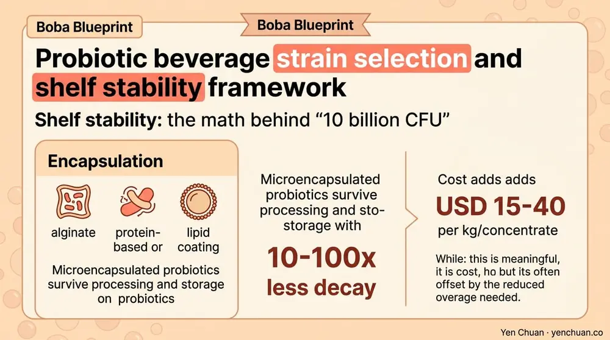
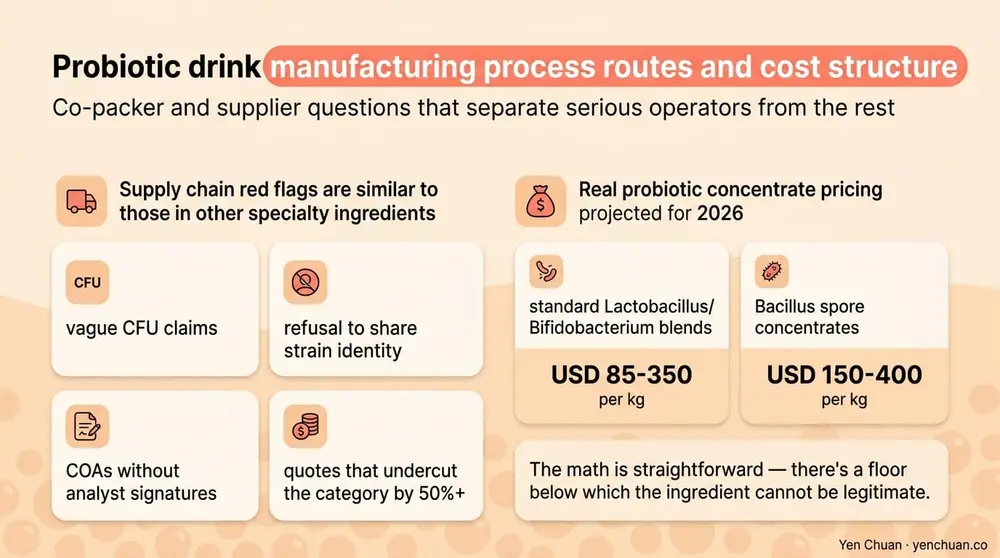

Articles / Business & sourcing
Probiotic Beverage Ingredients: RTD Stability Guide
2026-02-14 · Industry Trends, Technical Guide, Sourcing

Probiotic drinks were once synonymous with a single yogurt-shot format in Japan. In 2026 the category covers kombucha, functional sodas, protein-probiotic hybrids, probiotic boba, sparkling shrub drinks, and a growing shelf of ambient, shelf-stable formats that deliver live cultures without a cold chain. For brand owners and co-packers building into this category, the two questions that decide whether a product succeeds or fails are both technical: which strain should the formula use, and how does the drink keep those cells alive through processing, distribution, and 9-12 months on a retail shelf? This guide covers both.
Why probiotic drinks became one of the hardest beverage categories to manufacture
Mordor Intelligence sized the global probiotic drinks market at USD 29 billion in 2024 with 8-9% CAGR through 2030. Within that, the fastest growth is not in traditional fermented dairy — it's in functional, sugar-moderate RTD formats aimed at gut health, immune, and mood positioning. That shift brings a manufacturing problem: probiotics are living organisms, and most traditional beverage processes are designed to kill living organisms.
A lactic acid bacteria strain at room temperature loses roughly 0.5-2 log CFU per month depending on matrix and packaging. At pasteurization temperatures, it loses 6-7 log in seconds. For a brand claiming "10 billion CFU at time of consumption," that means counting losses backward from the sell-by date and building enough overage into the formulation to survive every downstream step. Strain selection, matrix compatibility, and encapsulation all determine how much overage you need — and every 1 log of overage costs real money in ingredient budget.
Strain selection: what the label name actually determines
A probiotic label claim is specific at the strain level (species + designator), not just the genus. "Lactobacillus" means nothing; "Lactobacillus rhamnosus GG" means a specific organism with specific clinical trial backing. For B2B buyers, strain choice cascades into every downstream decision:
| Strain family | Common clinical positioning | Heat tolerance | Acid tolerance | Typical cost |
|---|---|---|---|---|
| Lactobacillus rhamnosus (GG, HN001) | General immunity, gut | Low | High | Baseline |
| Lactobacillus acidophilus (NCFM, La-14) | Digestive, dairy | Low | High | Baseline |
| Bifidobacterium lactis (HN019, Bi-07, BB-12) | Gut, regularity | Low | Low-moderate | 1.2-1.5x |
| Lactobacillus plantarum | Multi-claim versatility | Moderate | High | 1.1x |
| Bacillus coagulans (spore-forming) | Shelf-stable RTD, immune | High | High | 1.5-2.0x |
| Bacillus subtilis DE111 | Shelf-stable, digestion | High | High | 1.5-2.0x |
| Lactobacillus reuteri DSM | Oral, gut | Low | High | 1.8-2.5x |
| Saccharomyces boulardii | Travel, antibiotics | Moderate | High | 1.4-1.8x |
For any shelf-stable RTD that won't live in a refrigerated case, spore-forming Bacillus strains are almost always the right default. Their dormant spore state survives pasteurization, low pH, and ambient storage, then germinates in the gut. Traditional Lactobacillus and Bifidobacterium strains require either refrigerated distribution, encapsulation, or post-fermentation inoculation — more complex, but sometimes necessary for brand story reasons.
Shelf stability: the math behind "10 billion CFU"
A probiotic claim on a label like "contains 10 billion CFU per serving" is a guarantee at a specific time point (usually "at time of manufacture" or "at time of consumption"). Regulators and serious retailers increasingly require the latter. Working backward:
- Target CFU at end of shelf life: 10 billion
- Expected decay over 12 months at ambient: 1.5-2 log for well-formulated spore-based, 2-3 log for encapsulated Lactobacillus, 4-5 log for unprotected Lactobacillus
- Required CFU at manufacture: 10-300 billion depending on system
That overage drives your ingredient cost. A spore-based drink might add 50-100 billion CFU at fill to guarantee 10 billion at month 12. An unprotected Lactobacillus product refrigerated at 4°C loses about 0.3-0.5 log per month — still requires 2-3x overage for a 90-day shelf life and is nearly impossible to stabilize for 12 months without encapsulation or lyophilization.
Three technology choices change the math:
Matrix pH: Bacterial strains survive longer in the pH 4.0-4.5 range than at pH 3.0 or pH 6.5+. Kombucha's natural pH is near the sweet spot; a fruit-forward soda at pH 2.8 is brutal for most strains.
Water activity (aw): Lower aw extends shelf life. Dry powder sachets or shots at aw 0.2-0.3 hold cultures for 2+ years; liquid RTDs at aw 0.98 pressure cells much faster.
Encapsulation: Microencapsulated probiotics (alginate, protein-based, or lipid coating) survive processing and storage with 10-100x less decay. Cost adds USD 15-40 per kg of concentrate, which is meaningful but often offset by the reduced overage needed.

Process routes: which one fits which brand
Three common manufacturing routes for RTD probiotic drinks, with different trade-offs:
Post-fermentation inoculation (cold fill). Drink is pasteurized, cooled to 4-10°C, then probiotic is dosed in and sealed. Requires refrigerated distribution and 60-90 day shelf life. Best for fresh, premium-positioning brands with regional distribution. Works with most Lactobacillus and Bifidobacterium strains.
Traditional fermentation + pasteurization. Drink is fermented to develop flavor and acid, then lightly pasteurized (70°C/15s) to stabilize for ambient. Kills most live cultures — label claim shifts to "contains fermentation benefits" rather than live CFU. Common in mass-market kombucha that can't maintain cold chain.
Spore-based ambient. Bacillus spores are dosed pre- or post-pasteurization; their dormant form survives both. Allows full ambient distribution and 12-18 month shelf life. Best for national rollouts, convenience retail, and any brand unwilling to maintain cold chain. Formulation is simpler, but strain options are narrower.
Aseptic cold fill. Drink is UHT-sterilized, then probiotic (usually encapsulated or spore-based) is dosed under aseptic conditions. Delivers 9-12 month ambient shelf life with viable cultures but requires dedicated aseptic capacity — a smaller number of co-packers can run it, and per-unit cost is higher.
Choose the process before locking the strain. A brand whose story requires "Lactobacillus rhamnosus GG" cannot run a full ambient process without adding encapsulation — and encapsulated LGG costs 2-3x unencapsulated.
Co-packer and supplier questions that separate serious operators from the rest
Before signing with any probiotic co-packer or strain supplier, get direct answers to these:
- Provide the strain CFU at manufacture AND at end-of-shelf-life stability data for the actual matrix you'll use, not a generic buffer solution.
- Confirm strain identity by genomic sequencing, not just morphology — strain substitution scams exist.
- Show the CoA method: plate count or flow cytometry? Flow cytometry captures viable-but-nonculturable cells more accurately; plate count is the FDA-acceptable method for label claim.
- Provide the regulatory dossier for the strain — FDA GRAS letters, EFSA QPS status, and any relevant national listings.
- For spore strains, confirm vegetative vs spore form count — the label claim is typically spore count, not vegetative.
Supply chain red flags are similar to those in other specialty ingredients: vague CFU claims, refusal to share strain identity, COAs without analyst signatures, or quotes that undercut the category by 50%+. Real probiotic concentrate pricing in 2026 runs USD 85-350 per kg for standard Lactobacillus/Bifidobacterium blends and USD 150-400 per kg for Bacillus spore concentrates. The math is straightforward — there's a floor below which the ingredient cannot be legitimate.

Probiotic boba and hybrid beverages: a real opportunity
For boba operators and functional beverage brands, probiotic hybrids are one of the more defensible category extensions. A probiotic-boosted milk tea using a spore-based strain adds roughly USD 0.08-0.15 in ingredient cost per cup and supports a USD 0.75-1.50 menu upcharge in the right market. The formulation is straightforward: 0.1-0.3% probiotic spore concentrate added to the base mix, typically post-brewing to avoid thermal kill.
For brands building a probiotic SKU into an existing beverage program, the same supplier vetting discipline that applies to creamer or pearl sourcing applies here, with extra scrutiny on strain identity and stability data. Our FDA nutrition labeling guide covers the label mechanics for any functional claim going into the US, and many of the same rules apply to probiotic claims.
Sources
- Mordor Intelligence — Probiotic Drinks Market
- International Scientific Association for Probiotics and Prebiotics
- FDA — Probiotic Labeling and Claims
- EFSA — QPS List of Microorganisms
- Grand View Research — Functional Beverages Market
About Yen Chuan
Yen Chuan has been at the heart of Taiwan's bubble tea industry for over 20 years, supplying premium powders, syrups, tapioca pearls, and tea leaves to thousands of boba shops worldwide. With an in-house R&D lab and a commitment to quality ingredients, Yen Chuan is more than a supplier — we're your partner in the boba business. Our R&D team has worked with Bacillus coagulans, B. subtilis DE111, and encapsulated Lactobacillus systems across boba hybrids, functional milk teas, and shelf-stable RTD formats — balancing strain cost, overage requirement, and flavor integration.
Build a probiotic drink that survives the shelf
Developing a probiotic RTD or a functional boba SKU? Talk to our R&D team or explore our functional ingredient catalog — we'll help you match strain, process, and overage math to a product your customers can actually consume with confidence.
Frequently Asked Questions
Q: What's the best probiotic strain for a shelf-stable RTD drink?
A: Spore-forming Bacillus strains — especially Bacillus coagulans and Bacillus subtilis DE111 — are the default for any ambient RTD. Their dormant spore state survives pasteurization, low pH, and 12-18 months of ambient storage, then germinates in the gut. Traditional Lactobacillus and Bifidobacterium strains require refrigeration, encapsulation, or cold fill.
Q: How many CFU should a probiotic drink contain?
A: Most clinically studied doses are in the 1-10 billion CFU range per day; 10 billion CFU per serving is the common label claim in the US and EU. That number is typically measured at end of shelf life, so manufacturers add 2-5x overage at fill — a 10 billion end-of-life claim might require 30-100 billion at time of manufacture depending on strain and matrix.
Q: Do probiotics survive pasteurization?
A: Traditional Lactobacillus and Bifidobacterium strains do not survive pasteurization — they lose 6-7 log in seconds at 72°C. Spore-forming Bacillus strains survive both pasteurization and UHT because of their dormant spore state. Brands using non-spore strains must either cold-fill after pasteurization or use microencapsulation for thermal protection.
Q: How much do probiotic ingredients cost?
A: Standard Lactobacillus/Bifidobacterium concentrates run USD 85-350 per kg FOB Asia, Bacillus spore concentrates USD 150-400 per kg, and specialty strains like Lactobacillus reuteri DSM or encapsulated systems USD 400-900+ per kg. Real per-bottle ingredient cost for a 10 billion CFU claim ranges USD 0.05-0.35 depending on strain, format, and overage required.
Q: What's the shelf life of a probiotic drink?
A: Spore-based ambient RTDs hold 12-18 months with validated stability data. Encapsulated Lactobacillus ambient products reach 9-12 months. Refrigerated post-fermentation inoculated drinks typically hold 60-90 days. Traditional kombucha pasteurized to ambient no longer carries live cultures — its shelf life may be 9 months but the label claim must shift to fermentation benefits.